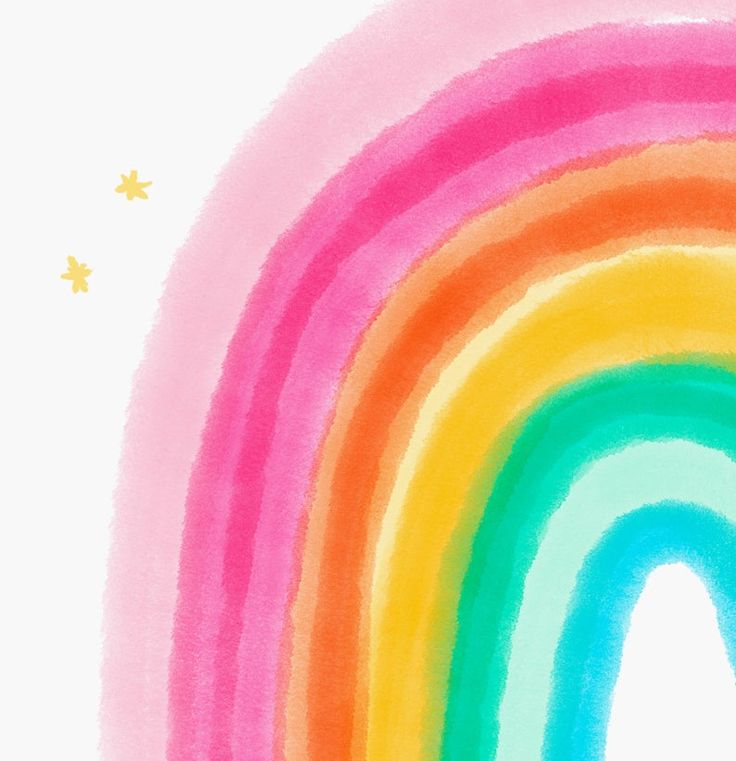

La psicología del color es un campo de estudio que se centra en cómo los colores afectan las emociones, el comportamiento y las percepciones de las personas. La psicología del color es un campo de estudio que se centra en cómo los colores afectan las emociones, el comportamiento y las percepciones de las personas. Desde las vibrantes puestas de sol que evocan una sensación de asombro hasta la sutileza de los tonos grises en una obra de arte, los colores juegan un papel fundamental en la forma en que experimentamos y comprendemos el mundo que nos rodea.

El color y las emociones
La teoría del color se centra en cómo los colores afectan las emociones y las percepciones de las personas. Aunque las respuestas emocionales al color pueden variar según la cultura y las experiencias individuales, existen algunas asociaciones comunes entre colores y emociones.
Rojo: El rojo suele estar relacionado con emociones intensas como la pasión, el amor, la ira y la excitación. También puede evocar sentimientos de urgencia y energía.
Azul: El azul tiende a transmitir calma, serenidad y confianza. Puede asociarse con la estabilidad, la confiabilidad y la paz.
Amarillo: El amarillo se asocia comúnmente con la felicidad, la alegría y la energía. También puede transmitir optimismo y calidez.
Verde: El verde está relacionado con la naturaleza, la frescura y el equilibrio. Puede evocar sentimientos de armonía y crecimiento.
Morado: El morado es a menudo asociado con la realeza, la creatividad y la espiritualidad. Puede transmitir misterio y sofisticación.
Rosa: El rosa se asocia comúnmente con la feminidad, la ternura y el amor. Puede evocar sentimientos de delicadeza y amabilidad.
Negro: El negro puede representar elegancia, autoridad y poder. También puede estar asociado con la tristeza o el luto en algunas culturas.